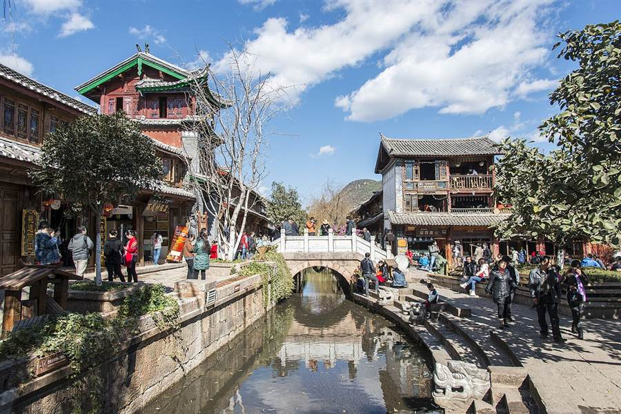
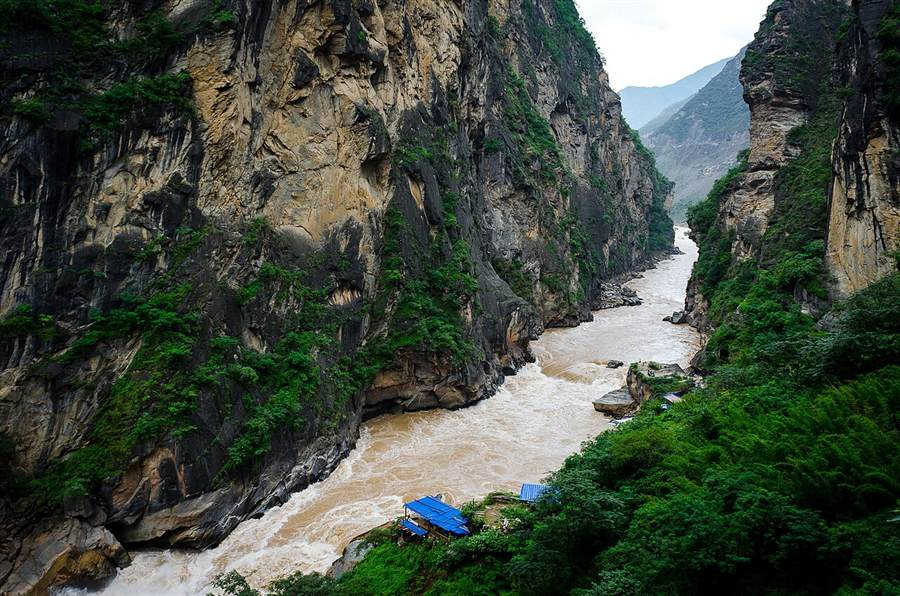
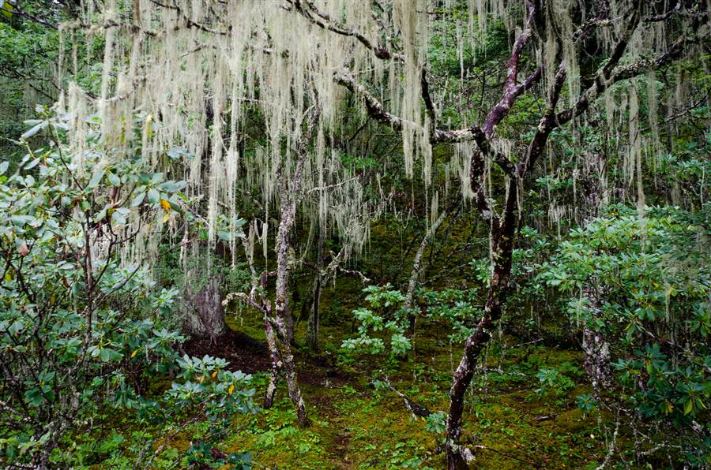
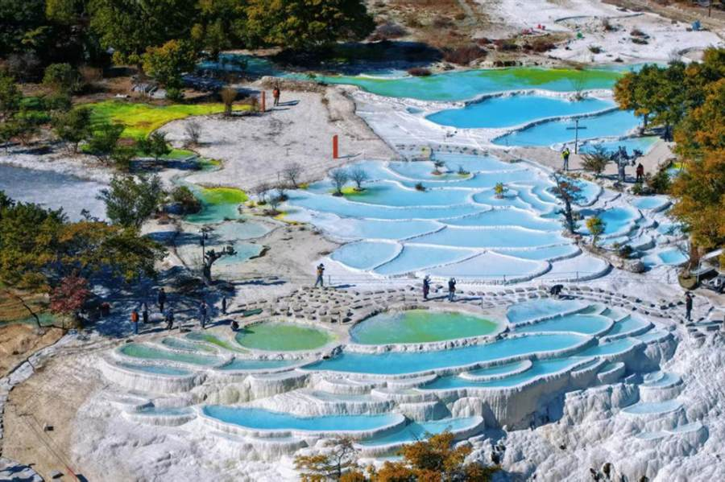
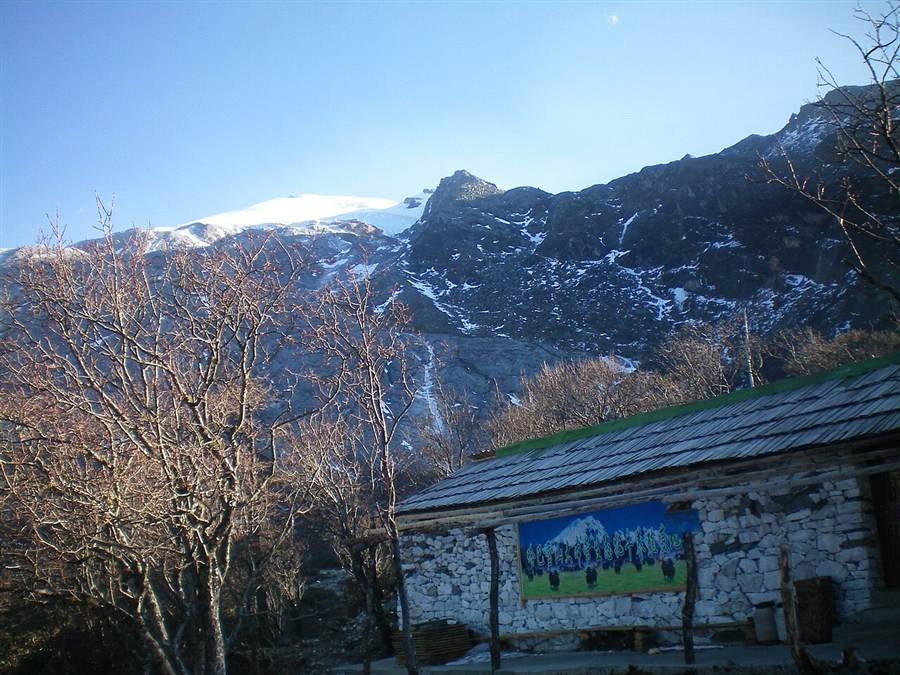
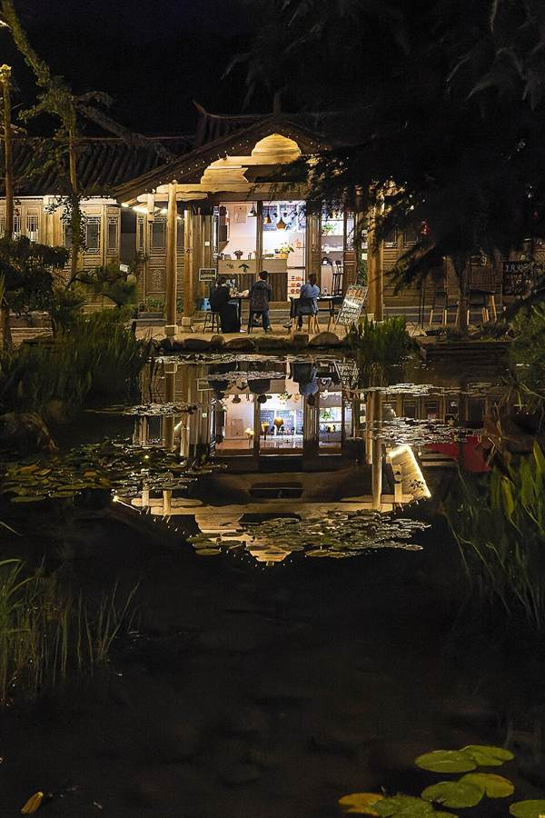
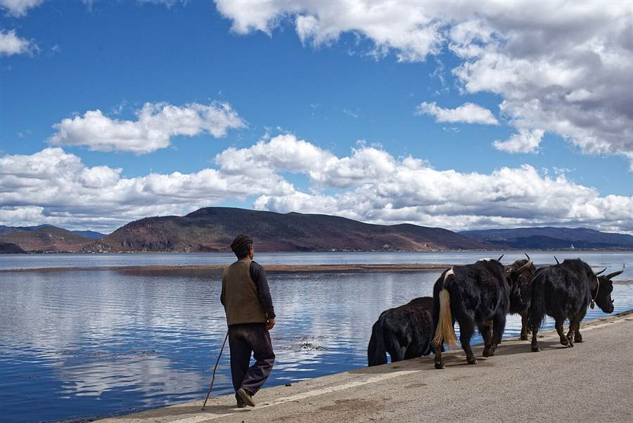

D1SEP 29 · TUE
ARRIVAL · ACCLIMATIZE
深圳 → 丽江 → 白沙 / 束河
机场取车 · 轻松逛镇 · 早休息
抵达丽江三义机场，取车、验车、拍摄车况；不在机场临时升级大车。
白沙古镇慢走，远看玉龙雪山；体力有余再去束河，不塞入玉龙雪山大景区。
清淡晚餐、补水、尽早休息，为第二天升至 3,200 m 做准备。
白沙牌坊雪山远景纳西街巷
首日避免饮酒、剧烈运动和过晚睡；如出现持续头痛、气促等不适，不要继续上升海拔。
从金沙江峡谷驶向高原湿地，再沿旅游东环线穿过钙华台地与雪山村落。6 天，完成一条不赶路的滇西北自驾小环线。
线路顺时针推进，D4 从香格里拉经白水台进入哈巴村，避免原路折返。点击地图节点，可查看当天角色。
建议时间按“国庆车流 + 山区驾驶”留出了缓冲。航班尚未出票时，以 D1 14:00 前落地、D6 14:30 后起飞为优先选择。






9 月底至 10 月初通常从雨季转向秋季，但高原天气变化快；照片只代表景观特征，不代表出行当天能见度与水位。

按 2 人一车、1 间房、5 晚估算。下面区分“公开页面当前可见价格”和“国庆实际应预留预算”，后者更适合拿来做总预算。
优先买去程早班、返程晚班，能完整保住 D1 和 D6。
| 日期 | 公开时刻候选 | 预算 / 人 |
|---|---|---|
| 9/29 去程SZX → LJG | 吉祥 HO1945 06:40–09:25 南航约 06:55–09:40 / 08:30–11:20 深航 ZH8983 15:55–18:50 | ¥900–1,600 |
| 10/4 返程LJG → SZX | 深航约 19:55–22:30 湖南航空约 21:00–23:35 吉祥约 22:00–00:30+1 | ¥900–1,600 |
店名是可用于搜索比价的样本；建议全部选择免费取消房型。
| 日期 / 地点 | 具体参考酒店 | 国庆预算 |
|---|---|---|
| 9/29 丽江白沙 / 束河 | LiJiang Mountain Spring Resort（公开起价约 US$83） 山眷云雪山观景酒店（公开起价约 US$115） | ¥600–1,000 |
| 9/30–10/2香格里拉 2 晚 | 住程国际酒店·独克宗店（公开起价约 TWD1,803/晚） 十月里供氧观景民宿（公开起价约 US$67/晚） | ¥1,000–1,800 |
| 10/2 哈巴村雪山景观民宿 | 哈巴大本营民宿（2026 新开，村内可停车、含观景平台） | ¥400–700 |
| 10/3 沙溪寺登街周边 | 剑川沙溪酒店（平日公开起价约 JPY4,068） 舒野集民宿（公开起价约 EUR99） | ¥350–900 |
2 人合计，含往返直飞机票、1 间房、6 天租车和全部常规旅行开销。
这条线不难，但真正的变量来自高原天气、国庆车流和东环线山区道路。把可控项提前处理好。
逐日天气、普达措与虎跳峡开放公告、纳帕海水位 / 积水、G214 与香丽高速临时管制，以及白水台—哈巴村—虎跳峡镇旅游东环线的落石、塌方、施工和通行状态。若连续降雨或有管制，D4 改走 G214 原路返回丽江，不为完成“环线”冒险。